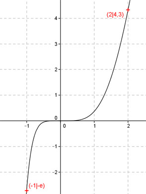
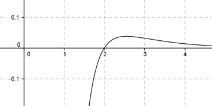

Aufgabe 111 Ergänzen Sie die Wertetabelle für den Graphen: y = x5 * e-x x -1 2 y -e 4,3 y = f(-1) = (-1)5 * e-(-1) = -1 * e = -e  An welchen Stellen x die Funktion den Wert 4,3 annimmt, ist elementar nicht zu ermitteln. Abgelesen: Es ist nur eine Stelle. Zur Berechnung wendet man ein Näherungs- verfahren an, hier die Regula falsi. f(x) = 4,3 eingesetzt: 4,3 = x5 * e-x |:x5 4,3 4,3 ----- = e-x |- ----- x5 x5 4,3 e-x - ----- = 0 x5 4,3 Als Funktion: y = e-x - ----- x5 Die Nullstellen dieser Funktion (y = 0) entsprechen den gesuchten Werten für x.  Abgelesen: Nullstelle zwischen 1,9 und 2,1. Regula falsi: x0 = gesuchte Nullstelle x1 * |y(x2)| + x2 * |y(x1)| x0 = ------------------------------ |y(x1)| + |y(x2)| Nullstelle x0 zwischen 1,9 und 2,1 mit Excel ermittelt: A B C D E F G H I J 1,9 2,1 0,0172 0,0241 0,0327 0,0505 0,0832 0,0413 2,0166 0,0042 1,9 2,0166 0,0042 0,0241 0,0080 0,0485 0,0565 0,0283 1,9993 0,0008 1,9 1,9993 0,0008 0,0241 0,0016 0,0481 0,0497 0,0249 1,9959 0,0002 1,9 1,9959 0,0002 0,0241 0,0003 0,0480 0,0483 0,0242 1,9953 0,0000 1,9 1,9953 0,0000 0,0241 0,0001 0,0480 0,0481 0,0241 1,9952 0,0000 Erläuterungen zur Tabelle siehe Aufgabe 101. Die gesuchte Nullstelle ergibt sich nach mehreren Näherungen mit ausreichender Genauigkeit zu x0 = 2 gerundet.